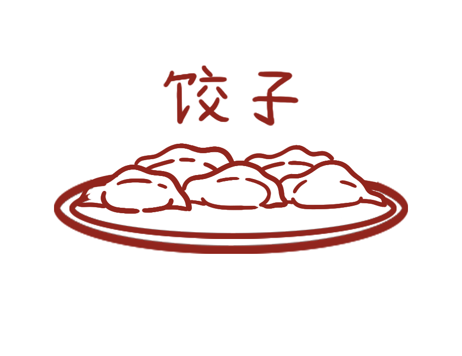

Turnip cake, steamed rice noodle rolls, dumplings, these are some of the foods I grew up on. The same foods I would be beyong embarrassed to bring to school.
In Chinese families, food is love. A parent giving their child the biggest piece of meat, sliced fruit handed to you on a plate, a favorite meal at the end of the long week.
Food is a language of love. The smells may be unfamiliar or unsavory to you, but it is the flavor of my people. We aren't forcing you to love it, we're just asking you to respect it.